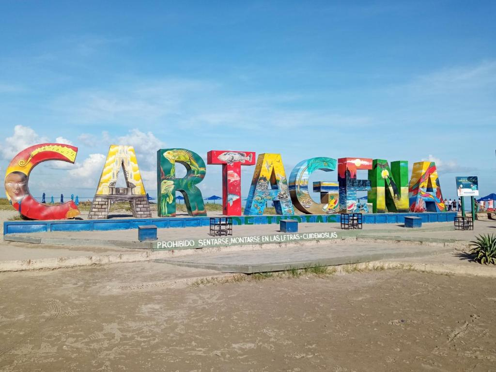
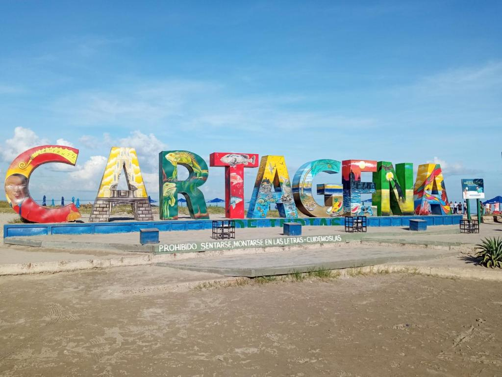

Historia de Cartagena
La historia de Cartagena de Indias está dividida en varios periodos que tienen como punto de partida la llegada de Cristóbal Colón al continente americano. Comienza con el periodo antes de la llegada del imperio español o precolombino, época de la que apenas hay vestigios culturales, y sigue con el "descubrimiento" y colonización por parte de España, los movimientos independentistas, la era republicana, los conflictos civiles, hasta cubrir la historia reciente.
La ciudad caribeña de Cartagena de Indias fue fundada en 1533 por Don Pedro de Heredia en tierras habitadas por los indígenas kalamari, fue un importante enclave hispano en el Caribe imperial español.